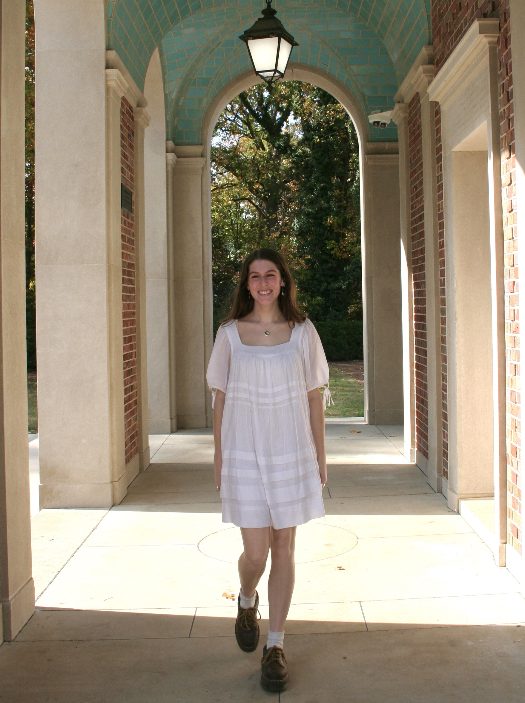
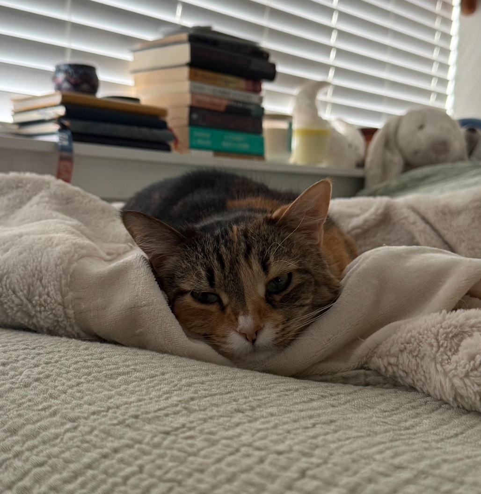
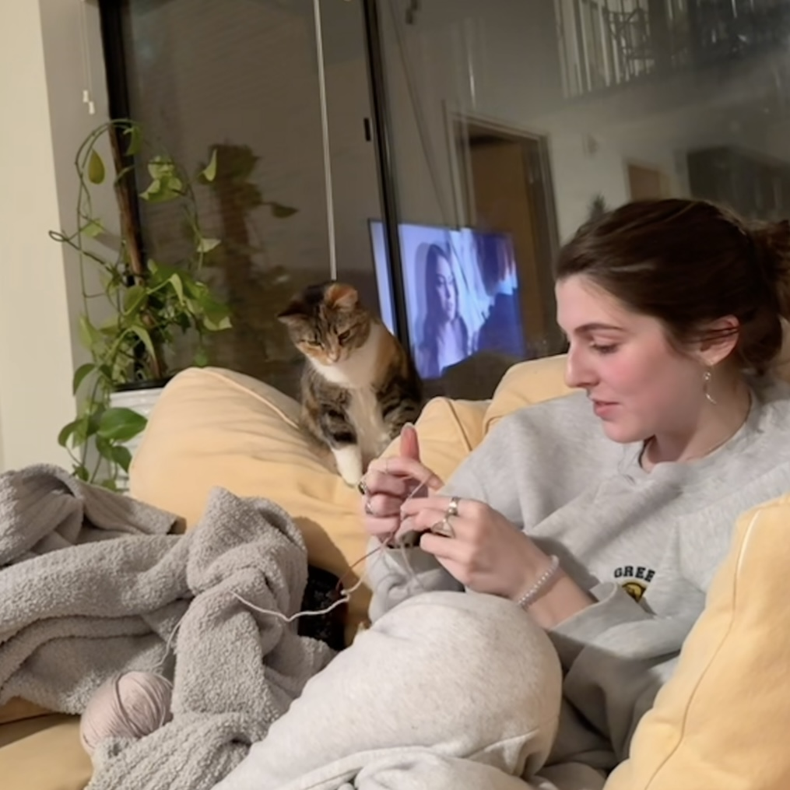
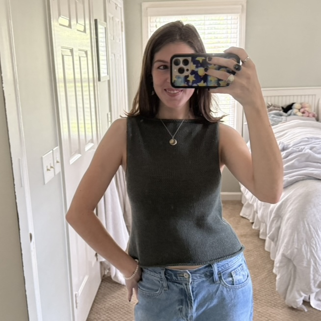
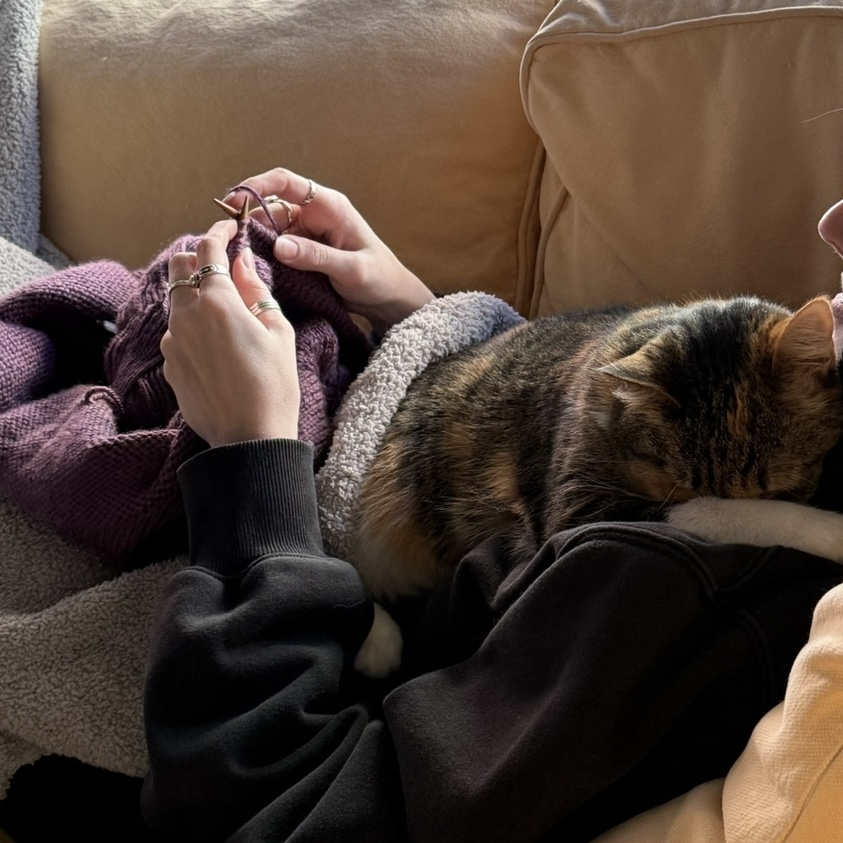

<!DOCTYPE html>
<html lang="en">
  <head>
    <meta charset="UTF-8" />
    <meta name="viewport" content="width=device-width, initial-scale=1.0" />
    <title>Whisker Knits</title>
    <link rel="preconnect" href="https://fonts.googleapis.com">
    <link rel="preconnect" href="https://fonts.gstatic.com" crossorigin>
    <link href="https://fonts.googleapis.com/css2?family=Bodoni+Moda:ital,opsz,wght@0,6..96,400..900;1,6..96,400..900&display=swap" rel="stylesheet">
    <link rel="stylesheet" href="https://cdn.jsdelivr.net/npm/picnic">
    <link rel="stylesheet" href="https://cdnjs.cloudflare.com/ajax/libs/font-awesome/7.0.1/css/all.min.css" crossorigin="anonymous">
    <link href="https://fonts.googleapis.com/css2?family=Averia+Serif+Libre:ital,wght@0,300;0,400;0,700;1,300;1,400;1,700&family=Crimson+Text:ital,wght@0,400;0,600;0,700;1,400;1,600;1,700&family=Lora:ital,wght@0,400..700;1,400..700&display=swap" rel="stylesheet">
    <link rel="stylesheet" href="css/styles.css" />
  </head>
</html>

<body>
    <nav class="demo">
        <a href="#" class="brand">
            <span><i class="fa-solid fa-cat"></i> Whisker Knits</span>
        </a>
        <input id="bmenub" type="checkbox" class="show">
        <label for="bmenub" class="burger pseudo button"><i class="fa-solid fa-bars"></i></label>
        <div class="menu">
            <a href="wip.html" class="button">WIPs</a>
            <a href="complete.html" class="button">Completed Projects</a>
            <a href="notes.html" class="button icon-puzzle">Nora’s Notes</a> 
            <a href="https://www.ravelry.com/people/norahobbs03" class="button">My Ravelry</a>
        </div>
    </nav>

    <main class="homepage">
        
        <!-- WELCOME HEADER -->
        <h1 class="welcome-title">Welcome to Whisker Knits!</h1>

        <!-- INTRO CARD -->
        <section class="intro-card">
            

            <div class="intro-text">
                <h2>Hi! I’m Nora</h2>
                <p>I love to knit, and my cat loves to supervise.</p>
                <p>This is my little space to share my projects, WIPs, and all the stitches in between!</p>
                <p>Meet Binns! Loves long naps, sitting near a warm lamp, and swatting at the tail end of my yarn. She also answers to Bean.</p>
            </div>

            
        </section>

        <!-- COLOR PALETTE -->
        <div class="palette-card">
            <h3>Current Yarn Palette Inspiration</h3>
            <div class="swatch-wrapper">
                <span class="swatch" style="background: #3E5482"></span>
                <span class="swatch" style="background:#D2DAE9"></span>
                <span class="swatch" style="background:#B2AA99"></span>
                <span class="swatch" style="background:#332713"></span>
            </div>
        </div>


        <!-- PLAYLIST -->
        <section class="playlist-card">
            <div class="playlist-preview">
                <h2>Knitting Playlist</h2>
                <a href="https://open.spotify.com/playlist/4AZWgt0FCnWFpneCErpIY3?si=S9ViyijLTru7Jf7TRTLqFw&pi=2CRRuyxrR3abH" class="playlist-link">Listen Now →</a>
            </div>
        </section>

        <!-- PHOTO CARD GRID -->
        <section class="card-grid">
            <div class="photo-strip">
                <div class="polaroid">
                    
                    <p>Always Watching Over!</p>
                </div>
                <div class="polaroid">
                    
                    <p>My Camisole No. 10</p>
                </div>
                <div class="polaroid">
                    
                    <p>Asleep on the Job zzzz</p>
                </div>
            </div>
        </section>

    </main>

    <footer>Whisker Knits by Nora & Binns</footer>
</body>
